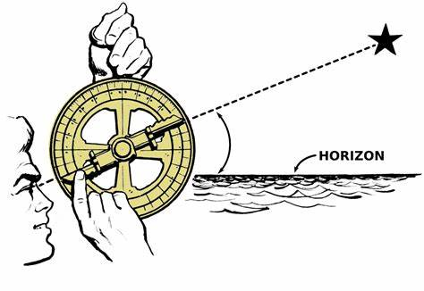

天文学の歴史
天文学とは
太陽とその重力によって公転する天体から構成される惑星系。年齢は約45億6800万年。
天文学の歴史


紀元前384年
アリストテレス
宇宙は地球を中心とする球形の構造を持つと主張し,この「地球中心説」は中世まで天文学の基盤となった。
紀元後90年頃
プトレマイオス
天動説（地球中心説）という考え方を体系化した。このモデルは天文学の基本理論として1400年近く支持された。
1543年
コペルニクス
今までの天動説とは異なった考えである地動説を提唱し,「天文学のパラダイムシフトを引き起こしました。
1609年
ガリレオ・ガリレイ
望遠鏡を改良し,月のクレーターや木星の衛星を観測。これにより地動説がより支持されるようになった。
1619年
ヨハネス・ケプラー
「ケプラーの法則」を発表し,惑星が楕円軌道を描いて太陽を周回していることを説明した。